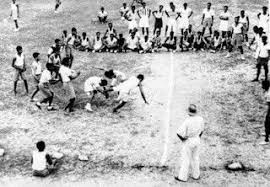
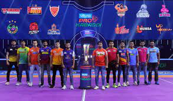

Kabaddi is a contact team sport played between two teams of seven players, originating in ancient India.The objective of the game is for a single player on offense, referred to as a "raider", to run into the opposing team's half of the court, touch out as many of their players as possible, and return to their own half of the court, all without being tackled by the defenders in 30 seconds. Points are scored for each player tagged by the raider, while the opposing team earns a point for stopping the raider. Players are taken out of the game if they are touched or tackled, but return to the game after each point scored by their team from a tag or tackle.It is popular in the Indian subcontinent and other surrounding Asian countries. Although accounts of kabaddi appear in the histories of ancient India, the game was popularised as a competitive sport in the 20th century. It is the national sport of Bangladesh.[3] It is the second most popular and viewed sport in India after cricket.[2][4] It is the state game of the Indian states of Andhra Pradesh, Bihar, Chhattisgarh, Haryana, Karnataka, Kerala, Maharashtra, Odisha, Punjab, Tamil Nadu, Telangana, and Uttar Pradesh
Origins of Kabaddi are not clearly understood. There are various theories regarding its place and time of origin. The sport is said to have existed in the Indian subcontinent since prehistoric times.Rononjoy Sen speculates in his book Nation At Play, that kabaddi originated during the Vedic period (between 1500 BC and 500 BC).There are accounts of Gautama Buddha and Lord Krishna having played an ancient form of the sport.According to another version of the sport's origins, kabaddi originated in Tamil Nadu.It was reportedly common among the Ayar tribal people who lived in the Mullai geographical region of ancient Tamil Nadu. [14][15]There are also accounts of kabaddi having been played in Iran 2,000 years ago
Kabaddi is a popular sport in the Indian subcontinent.[79] The governing federation for kabaddi in India is the Amateur Kabaddi Federation of India (AKFI), which was founded in 1973 and compiled a standard set of rules. Kabaddi is the second-most popular sport in India, with the Pro Kabaddi League being watched by hundreds of millions of people each year.The governing body for kabaddi in Pakistan is Pakistan Kabaddi Federation.In Bangladesh, Kabaddi is known with a different name called "Ha-du-du". Ha-du-du has no definite rules and is played with different rules in different areas. Kabaddi is the national sport of Bangladesh, given official status in 1972.[81] The Amateur Kabaddi Federation of Bangladesh was formed in 1973.Kabaddi is among the national sports of Nepal. Kabaddi is played and taught in most primary schools beginning in about the third grade in most Nepali schools. Kabaddi was also played by the British Army for fun, to keep fit and as an enticement to recruit soldiers from the British Asian community. Kabaddi was brought to United Kingdom by Bangladeshi, Indian, Pakistani, Nepali and Sri Lankan immigrants.
The Kabaddi World Cup is an outdoor international standard style kabaddi competition conducted by the International Kabaddi Federation (IKF), contested by men's and women's national teams. The competition has been previously contested in 2004, 2007 and 2016. All the tournaments have been won by India. India defeated Iran by 38–29 in the final of the championship game to clinch the title of 2016.After the establishment of a new kabaddi organization named World Kabaddi Federation,a 2019 Kabaddi World Cup was held in April 2019 at Malacca, Malaysia. It was the largest world cup in kabaddi history, consisting of 32 men's teams and 24 women's teams.
Four seasonal editions are held every year.Three tournaments were conducted in 2022: Summer Edition in Jaipur, Monsoon Edition at Ranchi,and Winter Edition at Pondicherry; and two in 2023: the KMP YKS[63] in Maharashtra(which was won by Ahmednagar) and Summer Edition Mysore.For the first time in the history of Indian kabaddi, players from the North East will be playing in a tournament of this stature.
Pro Kabaddi League (also known as Vivo Pro Kabbadi for sponsorship reasons)[2] or abbreviated to PKL is an Indian men's professional Kabaddi league. It was launched in 2014 and is broadcast on Star Sports.It is the most popular kabaddi league in the world. It is also the second most watched sports league in India after the Indian Premier League (IPL).Puneri Paltan are the current champions of PKL.The league's inception was influenced by the popularity of the kabaddi tournament at the 2006 Asian Games. The format of the competition was influenced by IPL. The Pro Kabaddi League uses a franchise-based model and its first season was held in 2014 with eight teams each of which has paid fees of up to US$250,000 to join.[7][8]There were doubts over whether the Pro Kabaddi League would be successful, noting that many leagues were attempting to emulate the IPL's business model and success and that, unlike cricket, there were relatively fewer well-known players in Kabaddi. However, it was also noted that kabaddi was widely played in grassroots community settings, and could thus attract a wide variety of rural and metropolitan viewers for advertisers to target if the league gained significant attraction